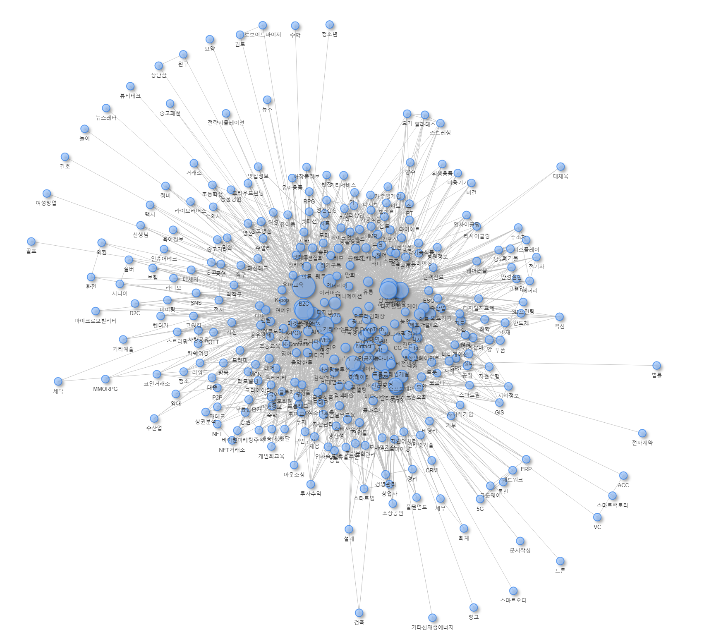

| 기업명 | 기업설명 |
|---|---|
| 서울옥션 | 미술품 경매 서비스 플랫폼 ‘서울옥션’, ’블랙랏’을 운영하는 기업 |
| 한국산업은행 | 한국산업은행법에 의해 설립된 특수은행 |
| 아산나눔재단 | 청년창업 지원 및 교육사업, 협력사업을 전개하는 현대그룹의 재단 |
| 케이옥션 | 미술품 경매 서비스 ’케이옥션’을 운영하는 기업 |
| 민다 | 한인 숙소 숙박 예약 플랫폼 ’민다’를 운영하는 기업 |
| 대학내일 | 트렌드 미디어 ‘캐릿’ 운영 및 광고/마케팅 솔루션을 제공하는 기업 |
| 샤페론 | 아토피 피부염 치료제를 개발하는 기업 |
| 자연인 | 천연화장품 브랜드 ’아이소이’를 운영하는 기업 |
| 리본즈코리아 | 명품 신제품/빈티지 제품 커머스 및 렌트 서비스 플랫폼 ’리본즈’를 운영하는 기업 |
| 이그린글로벌 | 마이크로튜버기술 기반 씨감자 종자를 개발하는 기업 |
| 파킹클라우드 | 클라우드 기반 스마트 주차장 관리 및 검색 서비스를 제공하는 기업 |
| 아이헤이트플라잉버그스 | 에듀테크 기반 중고등 온라인 영어, 수학 과외 플랫폼 ’밀당PT’를 운영하는 기업 |
| 버튼테크놀로지 | 대리운전 콜 플랫폼 ’버튼대리’를 운영하는 기업 |
| 머스트잇 | 온라인 명품 커머스 플랫폼 ’머스트잇’을 운영하는 기업 |
| 라이칸스로프 | 대한민국의 레저스포츠 랜턴 전문 기업 |
| 선을만나다 | 정부 중앙부처와 산하기관, 스타트업의 홍보기획과 대행 기업 |
| 에이팀벤처스 | 제조 업체 매칭 플랫폼 ’카파’를 운영하는 기업 |
| 티켓몹 | 공연·페스티벌 전문 소셜 큐레이션 서비스 ‘꽃가마’ 개발 기업 |
| 500비디오스 | 모바일 기반 비디오 명함 제작 플랫폼 ’500비디오스’를 운영하는 기업 |
| 스리체어스 | 저널 디지털 퍼블리싱 플랫폼 ’북저널리즘’을 운영하는 기업 |
DT Start-up Ecosystem
Exploratory analysis of key factors of Attract Investment
2024 24th Biennial International Telecommunications Society
2024-06-25
Changjun Lee 1, Kyungsun Lee 2, Yuri Park 3
1 School of Convergence. Sungkyunkwan University
2,3 Korea Information Society Development Institute
What is Digital Transformation?
DT (Digital Transformation) is the application of digital technology to all areas of business.
These fundamental changes will change how we operate our business and deliver value to our customers. It forces us to fundamentally rethink our methods.
This is not a simple technological change, but rather an organization that continuously challenges the status quo. A cultural shift that requires experimentation and getting comfortable with failure.
Fundamental paradigm shift from traditional business methods and processes
Motivation
Unlike manufacturing, where various technologies are integrated and digitalization is progressing rapidly, Digital transformation in the service industry progresses slowly
- South Korea’s service industry has a structural problem of low productivity and small-sized scale. The problem is that it is somewhat far from technological innovation.
However, due to COVID-19, digital transformation has emerged as a matter of survival, not a choice, and various DT attempts are underway in the service industry, starting with some fields and some companies.
Technology-based companies emerge and digitalization progresses to apply digital technology in various service fields (Musinsa, Masspresso (Qanda), Bucket Place (Today’s House), etc.)
With the integration of digital technology, data is collected and accumulated, service methods are changing and new possibilities are opening up.
In order to utilize the digital transformation as our opportunity, research is needed to diagnose and promote the digital transformation of the service industry
- Since DT is a field where a lot of innovation through new business models within the startup ecosystem occurs, analysis of startup ecosystem dynamics is needed
Why is DT Industry Classification Difficult?
Various degrees of digital maturity
- Different industries, and even businesses within the same industry, exist at different stages of digital maturity (e.g. finance, manufacturing, retail, healthcare, etc.)
- A one-size-fits-all classification system is likely to misrepresent these variations.
Rapid advancement in technology
The digital environment is changing rapidly (recent AI wave)
Technological innovations continue to change the nature and scope of digital transformation, rapidly obsolete fixed classification systems.
Why is DT Industry Classification Difficult? (Cont.)
Other DT approaches
Even companies in the same industry may have greatly different approaches to DT.
e.g.) Greater emphasis on face-to-face services in finance, introduction of AI to improve customer experience vs. Innovation in payment systems or asset management methods through introduction of blockchain
Unique Business Model
Digital innovation continues to create new and unique business models that defy traditional industry classifications (mutation).
e.g.) Mobility (or Housing) sharing
Research Goal
Development of a frame for digital transformation ecosystem analysis
Industry: Digital transformation industry classification
Technology convergence: Analysis of digital transformation business model and technology convergence trends
Organization: Analysis of organizational dynamics of digital transformation companies
Development of investment attraction prediction model using three frames of industry, technology convergence, and organization
Comparison of investment attraction prediction models and performance evaluation
Exploring key factors influencing investment attraction in the digital transformation ecosystem
Data comes from
Innvation Forest(www.innoforest.co.kr), 혁신의숲
Data comes from (for example)

About data
Innvation Forest(www.innoforest.co.kr)
Provides a service that provides information to investors and consumers by analyzing the businesses and technologies of digital innovation startups
The American model (dealroom.co)
Receive data on 4,709 companies (May 2022) and conduct analysis
- List of information provided in Innovation Forest DB
| Vars | Provided information |
Company Decription |
Company unique ID, company name, representative name, business registration number, business address, category, Classification of corporate attributes, corporate description, recent investment history, highest investment stage, total investment amount, date of incorporation, corporate homepage URL, domestic listed market classification |
Service |
service unique ID, company name, service name |
Consumer Transaction Amount |
Consumer transaction standard month, consumer transaction amount, number of consumer transactions |
Repurchase rate |
repurchase cycle classification, repurchase rate |
Average number of purchases |
consumer transaction standard month, average purchase cycle, number of purchases |
Transactions by gender and age |
gender classification, age classification, transaction share |
Traffic |
service unique ID, service name, traffic standard month |
Social |
buzz start date, buzz volume, SRS |
Investment attraction history |
Investment attraction history ID, company unique ID, company name, investment stage, participating investors, Investment date, investment amount |
Patent |
Everything about patents… |
Tech keywords |
technology keyword, keyword mention volume |
Profit/Loss/Finance |
settlement type classification, settlement target classification, settlement date, settlement figures |
Organization |
Employment start date, employees hired, employees quit, total number of employees |
Business category distribution

Business tag distribution
- e.g) Class101 (Online-based hobby|Edu class platform)
Business tag distribution

Cumulative investment amount
Distribution of cumulative investment amount attracted by InnoForest DB (unit: KRW 100 million)
Before removing outliers on the left, after removing outliers on the right
Digital transformation companies mainly received investments between 5 and 4 billion, with an average cumulative investment of about 1.5 billion.

Framework for digital transformation ecosystem analysis
1. Industry: Digital transformation industry classification
2. Technology business convergence: Analysis of convergence trends of digital transformation business model and technology
3. Organization: Analysis of organizational dynamics of digital transformation companies
Digital transformation ‘industry’ classification
Topic modelling
A kind of statistical modeling to discover abstract “topics” that occur in a collection of documents.
LDA (Latent Dirichlet Allocation)
LDA is a generative probability model that assumes that each chunk of text (e.g. a document or sentence) is a mixture of a specific set of topics and that each word in a document is attributed to one of the topics in the document.
Digital transformation ‘industry’ classification
DT ecosystem industry classification using topic modeling
Topic modeling is used to classify industries within a digital ecosystem where business models and technologies are integrated.
Assumptions of topic modeling: A document exists as a distribution of multiple topics, and a topic exists as a distribution of multiple sentences (words).
Document: Company
Sentence (word): Sentence (word, keyword) that describes the company
Topic: Industry
Topic modeling (LDA details)
The LDA model aims to find:
Document to Topic distributions: How likely each topic is for each document.
Topic to Word distributions: How likely each word is for each topic.
Mathematically, these distributions can be represented as follows:
- Document to Topic distribution: For each document \(d\), there’s a multinomial distribution over topics \(θ_d\).
\[ θ_d \sim Dirichlet(α) \]
Here, \(α\) is a K-dimensional vector, where K is the number of topics.
\[ θ_d \sim \beta_1 Topic_1 + \beta_2 Topic_2 + ... + \beta_k Topic_k \]
- Topic to Word distribution: For each topic \(k\), there’s a multinomial distribution over words \(β_k\).
\[ β_k \sim Dirichlet(δ) \]
Here, \(δ\) is a W-dimensional vector, where W is the number of words in the vocabulary.
\[ β_k \sim \gamma_1 Word_1 + \gamma_2 Word_2 + ...+ \gamma_k Word_k \]
Given these distributions, each word \(w_{di}\) in each document \(d\) is generated in the following way:
- Choose a topic \(z_{di}\) from the document’s multinomial distribution of topics.
\[ z_{di} \sim Multinomial(θ_d) \]
- Choose a word from the topic’s multinomial distribution of words.
\[ w_{di} \sim Multinomial(β_{z_{di}}) \]
The goal is to learn the hidden topic structure \(θ_d\) and \(β_k\) that likely generated the observed collection of documents.
Developing DT ecosystem industry using ‘topic modeling’
- Perform LDA using company descriptions in the data
Classification of DT ecosystem industries using ‘topic modeling’
Text preprocessing process, such as removing special characters, unifying capital letters, and extracting nouns.
Determine the optimal number of topics:
k = 20

LDA model results estimating beta and gamma values with 20 topics
Beta: Word (keyword) probability by topic (industry)
gamma: Topic (industry) probability by document (company)
Classification of DT ecosystem industries using ‘topic modeling’
‘Keywords’ by DT ecosystem industry

DT ecosystem industry-specific ‘keywords’
- Detailed company description of topic 16 (industry) Contents: Gamma Sort in descending order
| 기업명 | 기업설명 |
|---|---|
| 미디어프론트 | 실감콘텐츠 및 미디어 솔루션을 기반으로 디지털 미디어 컨설팅 및 공간 기획을 하는 기업 |
| 키베이직 | 반려동물 생애주기 맞춤형 건강식품 브랜드 ’위그힐’을 운영하는 기업 |
| 시프트업 | 모바일 RPG(role playing game) 게임 ‘데스티니 차일드’와 ’니케:전쟁의 여신’ 등을 개발 및 운영하는 기업 |
| 아이디어박스 | 모바일 AoS 게임을 개발하는 기업 |
| 5민랩 | AI/VR 기반 모바일 게임을 개발하는 기업 |
| 제트커머스코퍼레이션 | 퀵커머스 마켓 플랫폼 ’패스켓’을 운영하는 기업 |
| 아이지에이웍스 | AI/머신러닝 기반 모바일 마케팅 솔루션을 제공하는 기업 |
| 넥셀론 | 모바일 낚시 게임 ‘피싱앤라이프’ 등을 운영하는 기업 |
| 나날이 | VR 게임 ‘후르츠어택 VR’ 및 모바일 게임 ‘샐리의 법칙’ 등을 운영하는 기업 |
| 라이온하트스튜디오 | 모바일 MMO RPG 게임 ’오딘’을 운영하는 기업 |
| 엔퓨전 | 2D 애니메이션 기반 모바일 수집형 RPG 게임을 개발하는 기업 |
| 샤인게임즈 | 게임개발 기술 기반의 실시간 PVP 팀 배틀 게임을 개발하는 기업 |
| 하이로컬 | 전세계 현지인과의 실시간 통화 연결 플랫폼 ’하이로컬’을 운영하는 기업 |
| 뉴지스탁 | 개인투자자를 위한 투자 로보어드바이저 및 알고리즘 매매를 하는 “젠포트”를 개발, 운영하는 기업 |
| 액션스퀘어 | 모바일 액션 RPG 게임 ‘블레이드’, ’삼국지 블레이드’등을 개발 및 공급하는 기업 |
| 한국공간데이터 | AI 기반 공간 운영 솔루션 ‘스페이션’ 및 청소/수리 서비스 플랫폼 ‘마이소장’, ’클리니어’를 운영하는 기업 |
| 노써치 | 사용자 리뷰 기반 가전제품 비교,추천 및 판매 플랫폼 ’노써치’를 운영하는 기업 |
| 비브스튜디오스 | VR/AR 기술 기반 메타버스 콘텐츠의 기획/제작 및 솔루션을 제공하는 기업 |
| 플레인베이글 | AI 알고리즘 기반 고객맞춤형 언어 학습 플랫폼 ’스키피’와 채팅형 시뮬레이션 게임 플랫폼 ’피카’를 운영하는 기업 |
| 넵튠 | 모바일 게임을 개발하는 기업 |
DT ecosystem industry-specific ‘keywords’
- Detailed company description of topic 20 (industry) Contents: Gamma Sort in descending order
| 기업명 | 기업설명 |
|---|---|
| 바이포엠 | 광고마케팅 기반 PB 상품 유통 및 음악/출판/영상 등의 콘텐츠를 제작하는 기업 |
| 비디오빌리지 | 뉴미디어 기반 영상 콘텐츠를 제작하는 기업 |
| 투니모션 | 웹툰 기반 애니메이션 콘텐츠를 제작하는 기업 |
| 플레이리스트 | 웹드라마 및 모바일 콘텐츠를 제작하는 기업 |
| 캠프파이어애니웍스 | 애니메이션 영화 및 비디오물을 제작하는 기업 |
| 앰포 | 영상 콘텐츠 전용 VPN ‘마릴 VPN’ 솔루션을 제공하는 기업 |
| 어반플레이 | 도시를 기획하고 도시 맞춤형 콘텐츠를 제작하는 기업 |
| 모스테입스 | 애니메이션, 게임, 웹툰 등을 제작하는 콘텐츠 기업 |
| 쉐이커미디어 | 템플릿 기반 상업용 영상 제작 플랫폼 ’쉐이커’를 운영하는 기업 |
| 스튜디오쉘터 | 3D그래픽, 애니메이션 기술을 기반 콘텐츠를 제작하는 기업 |
| 유니드캐릭터 | 유아용 애니메이션 컨텐츠 “크리켓팡”을 제작하는 기업 |
| 엠젯패밀리 | 웹툰/웹소설 제작 및 굿즈 커머스 플랫폼을 운영하는 기업 |
| 구디스튜디오 | 디지털 제작 시스템 기반 웹툰,웹소설 등의 콘텐츠를 제작하는 기업 |
| 몬스터스튜디오 | ‘브레드 이발소’ 등의 애니메이션 영상 및 굿즈를 제작하는 기업 |
| 네오사피엔스 | 인공지능 기반 음성, 영상 콘텐츠 제작 서비스 플랫폼 ’타입캐스트’를 운영하는 기업 |
| 테이크원컴퍼니 | 게임/음악/드라마/영화/웹툰 등의 콘텐츠를 제작하는 기업 |
| 엔진비주얼웨이브 | 시각 특수효과 및 영상 그래픽 콘텐츠를 제작하는 기업 |
| 딥픽셀 | 컴퓨터 비전 및 머신 러닝 기반 시각 지능 알고리즘을 연구, 개발하는 기업 |
| 얼반웍스 | 방송 및 광고 제작, 연예 매니지먼트 및 뉴미디어 사업 등의 콘텐츠를 제작하는 기업 |
| 멋들어진 | MTO 패션 가상제작 및 주문/생산 관리 솔루션 플랫폼 ’플러그’를 운영하는 기업 |
Derive titles by industry
Utilize OpenAI’s
chatGPT 4.0(use prompt below, automate)Select the most appropriate industry name among the candidates and revise it under the supervision of the researcher.
Prompt template
Summarize the detailed descriptions of the representative companies below into the names of the industries they represent. - At this time, create an industry name using industry-specific keywords X1, X2, X3, .., X10. - Make 5 industry name candidates. - Details of 30 representative Explanation lists
Derive final industry names
Industry Name
1. Healthcare, food, cosmetics commerce and technology services industries
2. Immunity and incurable disease treatment industry using new drug development and digital technology
3. Sales and electrical infrastructure industry using smart manufacturing technology and artificial intelligence
4. Smart software and location-based accommodation and travel service brokerage industry
5. Wearable and pharmaceutical-based brand commerce and sales industry
6. Online payment, commerce and autonomous driving technology industry
7. Big data analysis and security-based business solution industry
8. Artificial intelligence and IOT-based education and distribution content system industry
9. Digital content and information system industry focused on fashion, beauty and health
10. IT and e-commerce consulting industry for global information and data management
11. Digital-based online and offline communities and marketing support industry
12. Vehicle management, robotics technology, diagnostic product manufacturing and media industries
13. Meta-education, shopping and supply management, English home service industry
14. Comparison-purchase commerce centered on online sharing and collaboration
15. Digital e-commerce, pet care, IOT manufacturing, and real estate brokerage startup industries
16. Customized media and space planning industry using mobile games and VR
17. Brand product distribution and software design industry focusing on non-face-to-face training and reservation services
18. Blockchain-based virtual asset management and integrated trading community industry
19. Eco-friendly technology industry through professional manufacturing and supply
20. Content production and video streaming industry through various media
Companies by Industry

Buzz by industry
Investment stage distribution by industry
Investment timing, investment round, and investment field are different for each VC.
When money flows in (investment occurs), a new market is formed and grows together.
We want to look at the timing of investment in order to predict what new market will be formed in the future.
Investments at the SEED (~300 million) and Pre-A (5~1 billion) stages are at the stage of growing the market.
Investment stage distribution by industry

Industrial ecosystem ‘Tech-BM’ convergence analysis through knowledge structure analysis
knowledge Structure
Knowledge structures represent the organization and distribution of knowledge within different economic activities and geographic locations
Involves understanding how knowledge is created, shared and utilized across different sectors of the economy and how it is influenced by spatial factors.
Examines spatial patterns of knowledge production, innovation and diffusion, considering factors such as proximity, connectivity and accessibility
Knowledge clusters or innovation hubs emerge in specific geographic areas where knowledge-intensive activities are concentrated, such as technology parks or research centers.
Knowledge spillover occurs when knowledge created in one location or industry spills over to benefit another location or industry, leading to an agglomeration effect.
The geography of knowledge is influenced by factors such as investment in research and development (R&D), educational institutions, availability of skilled labor and infrastructure.
Local and regional knowledge assets, including human capital, social networks and institutions, play an important role in attracting and sustaining knowledge-based industries.
The spatial composition of knowledge also affects regional disparities, as regions with higher knowledge intensity tend to experience greater economic development and innovation than regions with lower knowledge intensity.
Knowledge Space

Knowledge Space
Industrial ecosystem Tech-BM convergence analysis through knowledge structure analysis
Knowledge Structure = Tag Structure
Tag components: Business Model, Categories, Technologies
Business Model: Business Tag
TAG: Business, product, service, market keywords, etc.
TEchnology: Tech Tag
TAG: Technology, specialty area keywords, etc.
Tag structure analysis by industry
Tag portfolio of companies in the industry
Tag structure analysis by industry

Tag structure analysis by industry
Edge area of knowledge structure: Biz-Tech space

Edge area of knowledge structure: Biz-Tech space
Biz-Tech space by industry
Immunity and incurable disease treatment industry using new drug development and digital technology
Biz-Tech space by industry
Digital content and information system industry focused on fashion, beauty and health
Connection, weighted connection, mediation, power, and closeness centrality in Biz-Tech space
Degree: The number of other nodes in a graph to which a node is directly connected: can indirectly indicate the importance of that node in the graph
Weighted Degree: In a weighted graph, the weighted connection of a node represents the sum of the weights of connected edges: the degree of connection of a node considering the ‘strength’ or ‘importance’ of the edge.
Betweenness Centrality: Indicates how often they appear on the shortest path between all pairs of nodes in the graph: nodes with high betweenness centrality act as ‘bridges’ in the flow of information
Eigenvector Centrality: The power centrality of a node takes into account the importance of other nodes directly connected to that node: nodes that are more connected to important nodes have higher power centrality.
Closeness Centrality: The closeness centrality of a node indicates how ‘close’ it is to all other nodes in the graph: where ‘closer’ refers to the path length between nodes, i.e. the shorter the distance between nodes, the higher the closeness centrality. .
Id Deg w.Deg Btw Eig Close
<char> <num> <num> <num> <num> <num>
1: 1인가구 34 85 0.0006103511 0.003610531 0.001142857
2: 3D그래픽 152 1435 0.0022541048 0.046144039 0.001225490
3: 3D프린팅 81 397 0.0018932947 0.015416471 0.001207729
4: 3PL 40 125 0.0008548040 0.004469786 0.001172333
5: 5G 76 421 0.0009656426 0.014534478 0.001131222
---
416: 화상회의 60 203 0.0004986936 0.005370843 0.001164144
417: 화장품정보 69 320 0.0009651095 0.010240653 0.001190476
418: 화학 88 689 0.0021631283 0.027356933 0.001182033
419: 환전 34 152 0.0003481404 0.005784366 0.001071811
420: 회계 77 330 0.0019287885 0.010962206 0.001156069Tag’s position in the digital transformation technology space

Investment Attraction Prediction Model
Investment Attraction Prediction Model
Utilizing investment attraction data for four years from 2019 to 2022
Phase 1: 2019 ~ 2020 as a Train data set
Phase 2: 2021 ~ 2022 as a Test data set
Predictor: Investment attraction dummy variable for company i at time t
Invest Forecasting Model
\[ Invested_{i,t} = f(Industry_{i}, BizTech_{i}, Org_{i,t}) \]
i and j refers to each firm and each period
\[ Industry_{i} = \sum_{j=1}^k \beta_i \gamma_i \]
k is the number of topics (industries). k = 20 in this study.
\[ BizTech_{i} = \beta_1 Deg_{i}+\beta_2 w.Deg_{i}+ \beta_3 Btw_{i} + \beta_4 Eig_{i} + \beta_5 Close_{i} \]
\[ Deg_{i} = \frac{1}{l} \sum_{j=1}^l Deg_{i,j} \]
j refers to each tag in firm i and l is the number of tags in firm i
\[ Org_{i,t}=\beta_1 emp_{i,t} + \beta_2 InRatio_{i,t} + \beta_3 OutRatio_{i,t} + \beta_4 LogOddsRatio_{i,t} \]
\[ LogOddsRatio_{i,t} = ln(\frac{InRatio_{i,t}}{OutRatio_{i,t}}) \]
Investment Attraction Prediction Model
Competing Models: SVM, Random Forest, Ada-boost
- Explanable ML (Opt out NN and etc.)
Chosen Model: Random Forest
Performance test with test data set [2021-2022]
Accuracy: 71.23 %
Precision: 64.55 % : Investment prediction success rate
Confusion Matrix and Statistics
Reference
Prediction 0 1
0 2337 837
1 403 729
Accuracy : 0.712
95% CI : (0.6982, 0.7255)
No Information Rate : 0.6363
P-Value [Acc > NIR] : < 2.2e-16
Kappa : 0.3385
Mcnemar's Test P-Value : < 2.2e-16
Sensitivity : 0.8529
Specificity : 0.4655
Pos Pred Value : 0.7363
Neg Pred Value : 0.6440
Prevalence : 0.6363
Detection Rate : 0.5427
Detection Prevalence : 0.7371
Balanced Accuracy : 0.6592
'Positive' Class : 0
Key factors affecting DT ecosystem start-up investment attraction
Variable Importance Plot

Key factors affecting DT ecosystem start-up investment attraction
Partial Dependence Plot
Key factors affecting DT ecosystem start-up investment attraction
Partial Dependence Interaction Plot

Key factors affecting DT ecosystem start-up investment attraction
Partial Dependence Interaction Plot
Key factors affecting DT ecosystem start-up investment attraction
Partial Dependence Interaction Plot
Key factors affecting DT ecosystem start-up investment attraction
Partial Dependence Interaction Plot
Key factors affecting DT ecosystem start-up investment attraction
Partial Dependence Interaction Plot

Key factors affecting DT ecosystem startup investment attraction
Partial Dependence Interaction Plot

Discussion
The emergence of the abstract concept of digital transformation
Problem of not fitting into the existing industry classification framework
Problems that cannot be addressed through patent analysis, such as in manufacturing, for technology convergence analysis
Attempt to classify industries within a new industrial ecosystem using topic modeling
Try to show the Convergence of technology and business models outside of the existing framework clustering
Attempt to automate the business classification process leading to ML and Generative AI
Really effective in analyzing new industrial ecosystems
Tags, investments, buzz analysis, etc. for each business were possible.
Discussion
DT Ecosystem Analysis
Most visited Sectors by users (Buzz)
Artificial intelligence and IOT-based education and distribution content system
Healthcare, food, cosmetics commerce and technology service industries
Active investment area at the Seed stage (area where money is flowing)
Digital e-commerce, pet care, IOT manufacturing and real estate brokerage start-ups
Sales and electrical infrastructure industry using smart manufacturing technology and artificial intelligence
Pre-A stage (market expansion area)
Customized media and space planning industry using Mobael games and VR
Content production and video streaming industry through various media
Discussion
Knowledge structure analysis of DT ecosystem
Through data provided by the ‘Innovation Forest’ venture company information platform, we were able to derive the degree of correlation between technologies by analyzing how 419 unique tags (technology/business/product/service) appear simultaneously.
Visualize the technology space of the digital transformation technology venture ecosystem based on this correlation information
Through the position of each node (tag or technology) in the technology space, which detailed technology in the digital transformation technology space is fused with other technologies to create a new technology, mediates other technology groups, or is applied to multiple technology groups. I was able to find out.
Create a separate technology space for each industry classified through topic modeling and confirm that the positions of technologies within it can also be analyzed.
Discussion
Development of investment (VC) attraction prediction model
Industry, Biz-Tech convergence, organization: deriving a framework for three perspectives
As a result of training in period T and testing in period T+1, the performance was accuracy of over 70% and investment success rate of 65%
Key factors affecting investment attraction predictions
Organization > Convergence > Industry
Confirmed that organizational dynamics can be a good signal for investment decisions
Among the positions of Biz-Tech convergence, the mediation, connection, and proximity centrality of tags owned by a company can also be a decisive factor in deciding investment.
When to invest
When you get +1 or +2 from 3~4 employees
Or, when the organization’s in_ratio is slightly higher than its out_ratio
At the same time, companies with high mediation, weighting, and proximity centrality of their tags
Future study
Industry Classificaiton
- Comparison of topic models and traditional classification methods
Biz-Tech convergence part
Research on the meaning of centrality
Find ways to measure factors affecting investment factors more specifically
Organization factors
- Theoretical discussion on in & out dynamics
Finalize this talk
Thanks for your attention
You can find this presentation here
Any questions & suggestions?
Changjun LEE
SungKyunKwan University
School of Convergence (Tech & Culture)